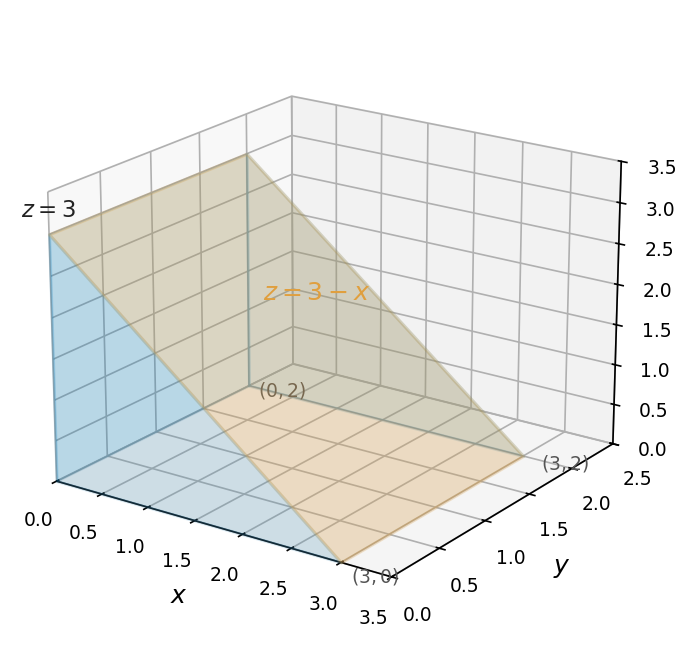

Quiz 6 MTH 310
Instructions. (15 points) Sections 14.8, 15.1, 15.1b. Show relevant work for full credit.
Use Lagrange multipliers to find the maximum and minimum values of \(f(x,y) = 2x + y\) subject to the constraint \(x^2 + y^2 = 5\).
Set \(\nabla f = \lambda \nabla g\) where \(g(x,y) = x^2 + y^2 - 5\): \[2 = 2\lambda x \qquad \text{and} \qquad 1 = 2\lambda y\]
From the first equation: \(\lambda = \dfrac{1}{x}\). Substituting into the second: \(1 = \dfrac{2y}{x}\), so \(x = 2y\).
Substitute into the constraint: \((2y)^2 + y^2 = 5 \Rightarrow 5y^2 = 5 \Rightarrow y = \pm 1\).
When \(y = 1\): \(x = 2\), \(f(2, 1) = 5\).
When \(y = -1\): \(x = -2\), \(f(-2, -1) = -5\).
\(\boxed{\text{Maximum} = 5}\) at \((2, 1)\). \(\boxed{\text{Minimum} = -5}\) at \((-2, -1)\).
Approximate \(\displaystyle\iint_R (x + 3y)\, dA\), where \(R = [1, 3] \times [0, 6]\), by using a Riemann sum with a \(2 \times 2\) grid of equal subrectangles and midpoints as sample points.
\(\Delta x = \dfrac{3-1}{2} = 1\), \(\Delta y = \dfrac{6-0}{2} = 3\), so \(\Delta A = 1 \cdot 3 = 3\).
The four midpoints are: \((1.5,\, 1.5)\), \((2.5,\, 1.5)\), \((1.5,\, 4.5)\), \((2.5,\, 4.5)\).
\[\iint_R f\, dA \approx \Big[f(1.5, 1.5) + f(2.5, 1.5) + f(1.5, 4.5) + f(2.5, 4.5)\Big] \cdot \Delta A\]
\[\begin{aligned} f(1.5,\, 1.5) &= 1.5 + 4.5 = 6 \\ f(2.5,\, 1.5) &= 2.5 + 4.5 = 7 \\ f(1.5,\, 4.5) &= 1.5 + 13.5 = 15 \\ f(2.5,\, 4.5) &= 2.5 + 13.5 = 16 \end{aligned}\]
\[\iint_R (x+3y)\, dA \approx (6 + 7 + 15 + 16)(3) = 44 \cdot 3 = \boxed{132}\]
Without performing any integration, evaluate \(\displaystyle\iint_R (3 - x)\, dA\) where \(R = [0, 3] \times [0, 2]\).
Hint: Sketch the solid and identify its geometric shape. You may verify your answer using an iterated integral if you wish.
The surface \(z = 3 - x\) is a plane that slopes from \(z = 3\) (at \(x = 0\)) down to \(z = 0\) (at \(x = 3\)).

Over \(R = [0,3] \times [0,2]\), this is a triangular prism (a wedge/ramp):
Triangular cross-section has base 3 and height 3, so area \(= \frac{1}{2}(3)(3) = \frac{9}{2}\).
The prism extends 2 units in the \(y\)-direction.
\[\iint_R (3-x)\,dA = \frac{9}{2} \cdot 2 = \boxed{9}\]
Verification: \(\displaystyle\int_0^2\!\int_0^3 (3-x)\,dx\,dy = \int_0^2 \left[3x - \frac{x^2}{2}\right]_0^3 dy = \int_0^2 \frac{9}{2}\,dy = 9\).
Evaluate \(\displaystyle\int x\cos x\, dx\).
Integration by parts with \(u = x\) and \(dv = \cos x\, dx\):
\(du = dx\), \(v = \sin x\).
\[\begin{aligned} \int x \cos x\, dx &= x\sin x - \int \sin x\, dx \\ &= x\sin x - (-\cos x) + C \\ &= \boxed{x\sin x + \cos x + C} \end{aligned}\]